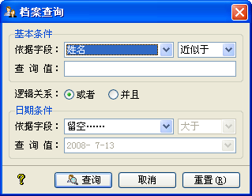

| 档案操作 - 查询 |
|
您可以对员工档案进行查询操作，其快捷键为Ctrl+F，界面如下图所示：  您若不指定基本条件的查询值并且日期条件的依据字段留空，系统将查询所有您选择的任职状态的员工。而当您设定好查询条件进行查询时，系统主界面所显示的员工档案将会是附合您设定条件的查询结果；而当您在主界面分类信息间点击后，此查询结果将被原来的结果所取代。 其中的逻辑关系描述的时，上面基本条件与下面日期条件进行组合查询的方法，它有[或者]与[并且]两个选项。 除此之外，在主界面上，还有一个快速查询功能，它支持式号、员工姓名及员工姓名之拼音的模糊查询，如下图所示： |